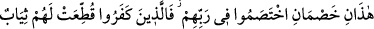
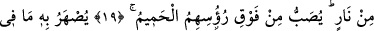
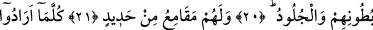
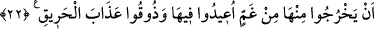
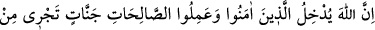
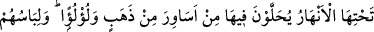
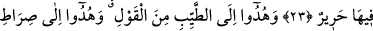
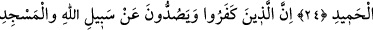
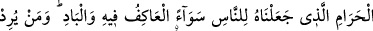
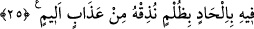

RABLERİ HAKKINDA
ÇEKİŞEN İKİ GURUP
19. Şu iki gurup, Rableri hakkında çekişen iki hasımdır: İmdi, inkâr edenler için
ateşten elbiseler biçilmiştir. Onların başlarının üstünden kaynar su dökülecektir!
20. Bununla, karınlarının içindeki (organlar) ve derileri eritilecektir!
21. Bir de onlar için demir kamçılar vardır!
22. Izdıraptan dolayı oradan her çıkmak istediklerinde, oraya geri döndürülürler
ve: “Tadın bu yakıcı azabı!” (denilir).
23. Muhakkak ki Allah, îmân edip iyi davranışlarda bulunanları, zemininden
ırmaklar akan cennetlere kabul eder. Bunlar orada altın bileziklerle ve incilerle
bezenirler. Orada giyecekleri ise ipektir.
24. Ve onlar, sözün en güzeline yöneltilmişler, övgüye lâyık olan Allah’ın yoluna
iletilmişlerdir.
25. İnkâr edenler, Allah’ın yolundan ve -yerli, taşralı- bütün insanlara eşit (kıble
veya mâbed) kıldığımız Mescid-i Harâm’dan (insanları) alıkoymaya kalkanlar
(şunu bilmeliler ki) kim orada (böyle) zulüm ile haktan sapmak isterse ona acı
azaptan tattırırız.
“Şu iki gurup,” yâni mü’minler ile beş gruba ayrılan kâfirler “Rableri hakkında” ya
da O’nun dîni veya zâtı ve sıfatları hakkında -ki bütün bunlar O’nunla ilgili hususlardır-